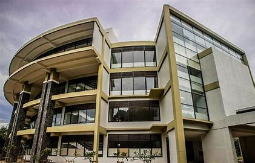
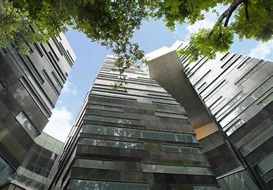
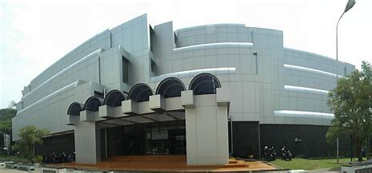

1. PERPSTAKAAN UNVERSITAS PADJADJARAN
Perpustakaan Universitas Padjadjaran memiliki banyak jenis koleksi di perpustakaan, mulai dari fiksi hingga materi ilmu pengetahuan, dari bahan cetak hingga koleksi digital seperti CD-ROM, CD, VCD dan DVD. Kami juga mengoleksi terbitan berseri harian seperti koran dan juga terbitan berseri bulanan seperti majalah.
GRAHA KANDAGA, Jalan Raya Bandung-Sumedang Km. 21 Jatinangor, Kab. Sumedang 45363 Jawa Barat
Telp: 022-842 88888.
Fax : 022-842 88898.
Email : perpustakaan@unpad.ac.id
2. PERPSTAKAAN UNIVERSITAS INDONESIA
Sejarah Perpustakaan UI telah melalui proses panjang sejak tahun 1959, ketika pimpinan Perpustakaan Fakultas dan Lembaga di lingkungan Universitas Indonesia mengadakan rapat untuk pertama kali di Biro Presiden Universitas untuk membicarakan organisasi perpustakaan. Sebagaimana lazimnya sebuah organisasi, perubahan dan perkembangan kelembagaan Perpustakaan UI berjalan seiring perkembangan UI itu sendiri. Hingga tahun 2010, UI memiliki 12 Perpustakaan Fakultas dan 1 Program Pascasarjana.
Gedung The Crystal of Knowledge, Perpustakaan UI Kampus UI, Depok 16424.
Telp : 021 7270751, 7270159, 7864134.
Fax : 021 7863469.
Email: library@ui.ac.id
3. PERPUSTAKAAN INSTITUT TEKNOLOGI BANDUNG
Perpustakaan ITB berdiri bersamaan dengan lahirnya Technische Hoogeschool (TH) di Bandung pada tahun 1920, sebagai cikal bakal ITB pada masa pendudukan Belanda. Perpustakaan ITB yang saat itu bernama Perpustakaan TH dikenal sampai ke luar negeri karena memiliki koleksi yang sangat bermutu dengan cakupan yang luas, meliputi hampir semua bidang ilmu, mulai dari ilmu rekayasa, ilmu pengetahuan alam, sosiologi, filosofi, sastra, musik dll.
Jalan Raya Bandung-Sumedang Km. 21 Jatinangor, Kab. Sumedang 45363 Jawa Barat
Phone Number : 022-250-0089.
Fax Number : 022-250-0089.
Email : library@itb.ac.id